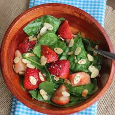

Strawberry Spinach Salad

Description
This strawberry spinach salad is a great way to get kids to eat spinach! Someone brought this salad to a potluck dinner, and I had to have the recipe.
Since then, I've made it many times and I've been asked for the recipe every time I take it somewhere.
Ingredients
- ½ cup white sugar
- ½ cup olive oil
- ¼ cup distilled white vinegar
- 2 tablespoons sesame seeds
- 1 tablespoon poppy seeds
- 1 tablespoon minced onion
- ¼ teaspoon paprika
- ¼ teaspoon Worcestershire sauce
- 1 quart strawberries - cleaned, hulled and sliced
- 10 ounces fresh spinach - rinsed, dried and torn into bite-size pieces
- ¼ cup almonds, blanched and silvered
Steps
- Make dressing
- Make salad
- Pour dressing